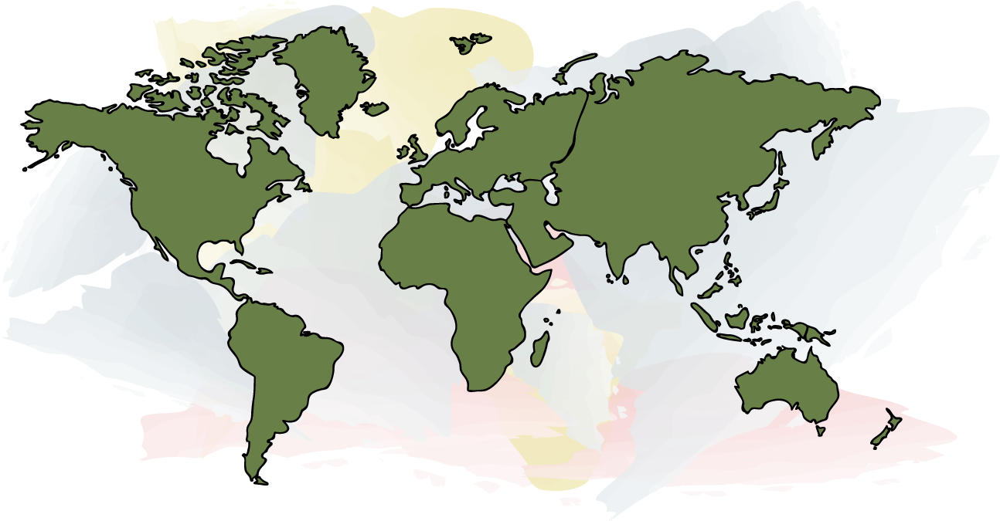
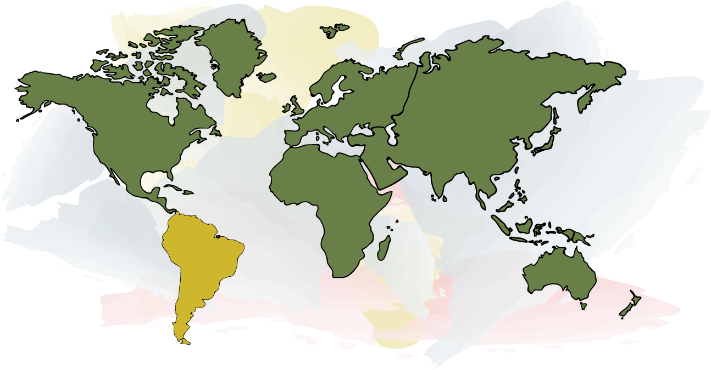

As with the logo, illustrations should have solid colour fills and thin black outlines for the main content, with backgrounds created using watercolour brush tools.
When illustrating interactive maps for hover effects, the hover section should have a different coloured fill taken from the approved colour palettes.
